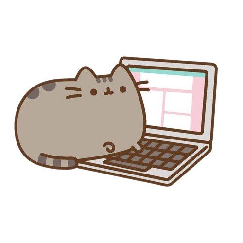
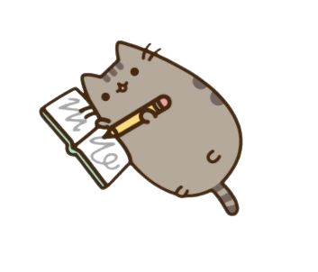
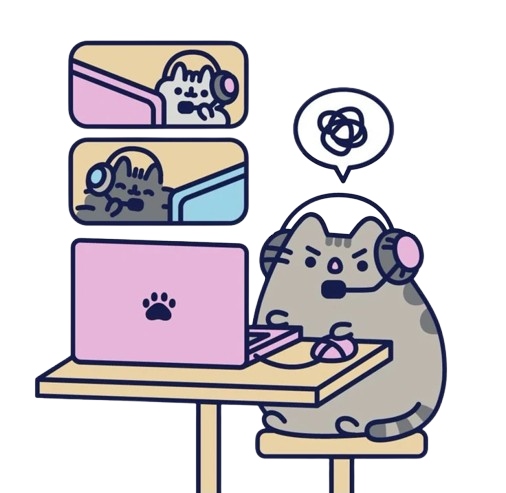
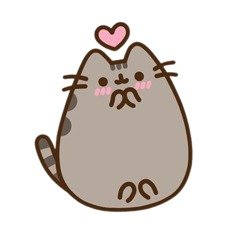

Are you a creative artist or an analytical artist?!
This is a quiz to find out if you are:
A creative Artist: Uses divergent thinking to explore multiple emotional or abstract concepts. Relies on spontaneous inspiration, gut feeling, and unconventional methods to see what could exist
An analytical Artist: Uses convergent thinking to refine details, measure proportions, and follow systematic rules. Treats a piece of work like a puzzle to be solved through logic, observation, and structural planning.
When starting a new artistic project, what is your immediate first step??


How do you judge whether a finished piece of work is successful?


When you run into a creative block, what helps you get back on track?